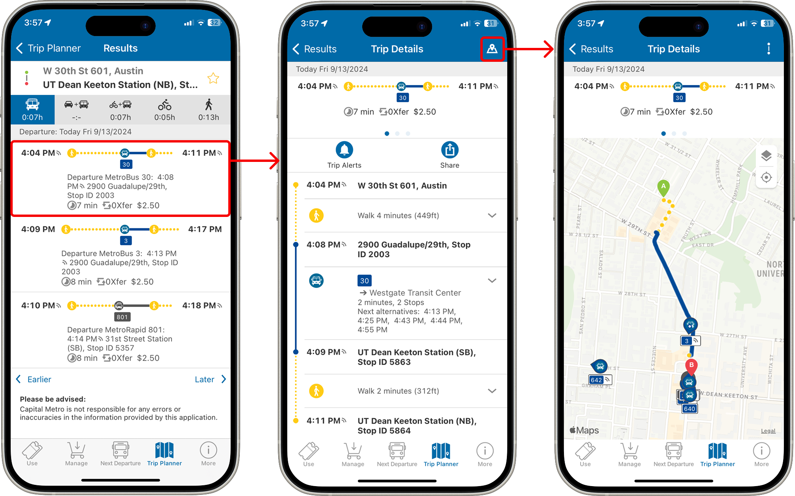

CapMetro Usability Study
September – December 2024
A usability study conducted on the mobile app for CapMetro, Austin's premier public transportation service

CapMetro provides public transportation services for Austin and the greater Central Texas area. My team conducted a usability study on the CapMetro mobile app in order to discover how they can better serve their users.
What I did:
Heuristic Evaluation

Our first step was to conduct a heuristic evaluation of the CapMetro app, identifying weaknesses and particular areas of concern using the Nielsen Norman list of usability heuristics. For this task, I primarily focused on evaluating the User Control and Freedom heuristic.
Competitive Analysis

Next, we conducted a competitive analysis on three direct and three indirect competitors to the CapMetro app. In this stage, I worked with my team to select companies and criteria for analysis and then performed a deep dive on the DoorDash app. We then produced a series of potential recommendations for the CapMetro app based on findings from its competitors.
Screener
After completing our preliminary findings, we went on to create a screener to find optimal participants for our study. The screener includes questions regarding general demographics, location, and lifestyle, with a focus on transportation use. When making the screener, we took care to not reveal the purpose of the study too early so as not to bias respondents.
User Testing
We were now finally able to move on to the user testing stage. We devised seven tasks for our users to complete, created a moderator script and user forms, and then completed six in-person user tests as well as a pilot. For the user tests, my teammates and I took turns in the roles of moderator, notetaker, and filmmaker.
For each test, we first had the user answer a few preliminary questions, and then jumped right into the tasks, guided by the moderator. We provided them with a Google form that had task instructions in written form as well as post-task questions for them to answer. After they completed all the tasks, we directed them to another form with post-test questions regarding their overall experience with the app.
For each test, we first had the user answer a few preliminary questions, and then jumped right into the tasks, guided by the moderator. We provided them with a Google form that had task instructions in written form as well as post-task questions for them to answer. After they completed all the tasks, we directed them to another form with post-test questions regarding their overall experience with the app.
Final Report

Finally, we analyzed the results of our user testing and compiled all of our findings and recommendations into a final report. We used affinity mapping to find common themes throughout all of our user tests and discovered many potential improvements to be made to the CapMetro app.
For the final report, I conducted a deep dive analysis on the fourth task, which consisted of finding a bus route to a specific location. I also performed a quantitative analysis on the data as a whole, obtaining a system usability score of 44.8/100, which is subpar compared to the industry average of 68.
For the final report, I conducted a deep dive analysis on the fourth task, which consisted of finding a bus route to a specific location. I also performed a quantitative analysis on the data as a whole, obtaining a system usability score of 44.8/100, which is subpar compared to the industry average of 68.
Final Takeaways
This was the first usability study that I ever completed from start to finish, and I learned a lot about all of the considerations that must go into a report like this.
What I learned:
Read the full final report here!